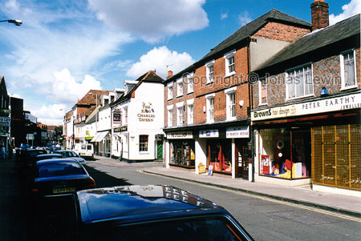
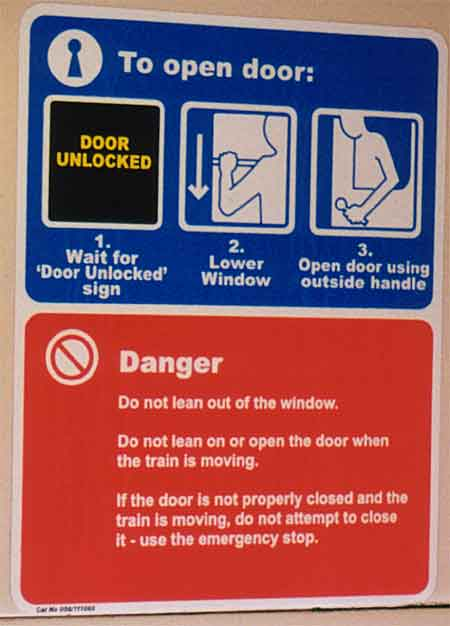

Classic
English meal. Fish 'n' Chips. And it tastes terrible. I just had to try it
several times when I was in England, to see that I didn't get the worst
possible restaurant. But they're all really bad.
Classic
English meal. Fish 'n' Chips. And it tastes terrible. I just had to try it
several times when I was in England, to see that I didn't get the worst
possible restaurant. But they're all really bad.And now I know that it
tastes bad, I don't have to try it again in several years.
Town
center. Another typical English village. No better, no worse.
This
sign in the train is however extremely stupid for several reasons:
1. What's the problem with having a handle inside the train, instead of having to open it with the outer handle?
2. 'Do not lean out of the window'. And you clearly see the person opening the door leaning outside to be able to open the door.
The rest of the stupid things I will not comment on right now.